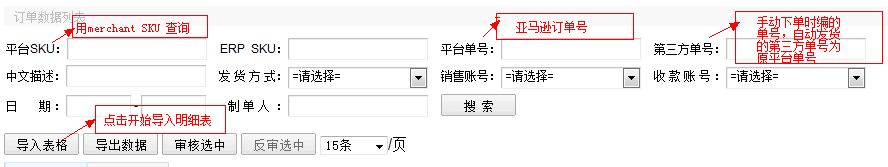
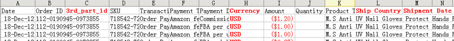
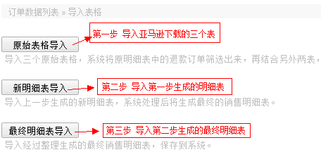
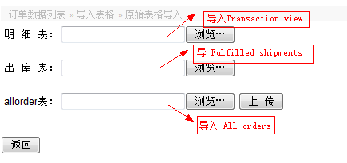
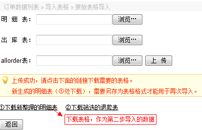
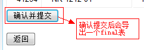
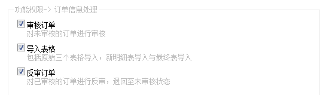

初始界面如下，可以导入表格，导出数据，审核订单，反审订单：

功能一、导入表格步骤：
1、在亚马逊下载原始数据表（Transaction view, Amazon Fulfilled Shipments, All Orders )
每个表下载后另存为.xls格式（Transaction view表头需稍作修改，如下图，红色加粗是手动添加项; 另外两个表无需改动）

2、明细表需分三步导入：

第一步、原始表格导入，Transaction表为主表，首先在Custom Transaction表中增加列：3rd_part_id， Ship Country，Shipment Date，Currency，前三项需系统匹配，Currency需销售手工录入，然后导入，如下图：

(1)系统对Custom Transaction 表中按type进行筛选，选出ORDER和 REFUND两种类型，其中ORDER作为订单供下一步操作。
(2)系统将S开头的手动下单的订单数量统一转换为0。
(3)系统将相同时间，相同ORDER ID，相同SKU(SKU为空的系统自动匹配all order 表中的SKU)的行进行纵项合并，对后面各列数据：数量，各项金额进行汇总，其中gift wrap credits + sales tax collected+ fba fees+ other transaction fees+ other合并汇总为amazon fee。
(4)系统自动将Custom Transaction 表中的order id与all order表order id匹配第三方单号和国家，如果all order表中无第三方单号，系统与ERP中订单号映射中相匹配，每个ORDER ID务必有相对应的第三方单号。
(5)系统自动匹配出ERP的SKU,产品名称。
简单总结第一步的操作流程效用是：
A、只导明细表，系统会根据表格上的order id在ERP系统中找第三方单号补全表格的3rd_part_id。
B、导明细表与出库表，匹配出库时间。
C、导明细表与all order表，匹配第三方单号和国家。
D、三张表都导，匹配第三方单号、国家、出库时间。
数据导入成功后，下载系统整理的新明细表，新的明细表，可以用于在此次重复导入：

注意，中国amazon的订单导入，内容为中文，所以在判断refund和order的时候，加上了判断为中文的refund条件。
第二步、导入新明细表，将第一步导出的表格，上传到“新明细表导入”，这次生成导出的表名为final, 将生成的表格前补全发货方式，发货仓库，销售帐号，用于下一步最终明细表导入。
导入后拖到底部

第三步、导入最终明细表 （将第二步导出的final表打开，补齐发货方式及销售帐号等信息，导入到“最终明细表处”）
上传成功后， 确认并提交，如有重复导入，系统会按ORDER ID+平台SKU+第三方单号进行覆盖。
另外新明细表导入的覆盖条件是date(时分秒)+ORDER ID即平台单号+平台SKU一样。
功能二、导出数据，导出附合当前筛选条件的所有数据。
功能三、审核与反审，最终表导入的数据状态为“未审核”，执行审核操作后，变为“已审核”，订单相关的报表，都是以“已审核”的订单作为数据。
最后附上该菜单下的权限配置项：

功能四、米悠新明细表导入，米悠出库表和收款表处理。
通过收款表的平台单号，来匹配出库表的平台单号，相同平台单号，将收款表的收入更新到出库表的收入，
并且收入要根据相同平台单号的sku的市场指导价的比例进行平摊，如果收款表的平台单号与出库表的平台单号出现并集，
要以收款表平台单号为主，如果收款表与出库表未匹配到相同平台单号，那么最终的数据，收入和其他信息都为0。